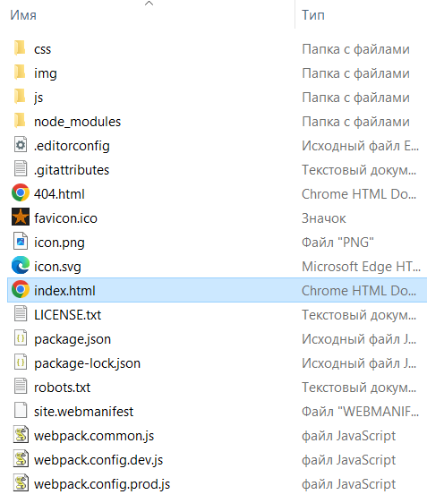

Редактируй меня!
И меня!
<html> - сообщает, что весь док написан в HTML
<head> - заголовок
<title> - название документа
<body> - тело (то, что отображается браузером)<h1> - заголовок первого уровня в тексте (в тексте только 1). Имеет атрибут id или name, который позволяет ориентироваться по странице из оглавления с помощью тега a<h2> - заголовок второго уровня в тексте
<p> - абзац (имеет больше вертикальный отступ, чем div и br)
<span> - особое оформление к участку текста
<i> - курсив: italics
<b> - жирный шрифт: bold
<del> - перечеркнутый текст: текст
<span> - универсальный тег, предназначенный для определения строчного элемента внутри документа
<cite> - ссылка или цитата
<em> - логическое выделение emphasize
<abr> - расшифровка абривиатуры HTML
<strong> - сильное логическое выделение
<code> - для обозначения фрагментов кода
<kbd> - для обозначения текста вводимого пользователем с клавиатуры
<samp> - пример
<dfn> - для определений
<var> - для имен переменных в программном коде
<tt> - моноширинной шрифт (если браузер может)
<div> - раздел
<br> - конец строки (не имеет закрывающего тега)
<hr> - горизонтальная линейка для отделения раздела документа (не имеет закрывающего тега).
<pre> - для отображения текста ровно так как он был набран
& или # - код символа Unicode
<a> - якорь для определения исходной точки и назначения гиперссылки. Используется с атрибутом href для создания пункта назначения URL
<img> - встроенное изображение, атрибут align =top, bottom, middle, атрибут ismap (не имеет закрывающего тега).
alt -
<ul> - неупорядоченный список
<li> - list item, пункт списка
<ol> - упорядоченный список
<dl> - список определений
<dt> - имя или заголовок в списке определений
<dd> - значение определения
<isindex> - для строки поиска (не имеет закрывающего тега).
<form> - форма, окно ввода
<table> - таблица (создается построчно)
<caption> - описание таблицы
<tr> - строка таблицы
<td> - тег данных
<th> - тег заголовка
<frameset> - специальный документ для фрейма (ставить на месте body). Сообщают браузеру как разделить окно на несколько отдельных фреймов
<frame> - тег внутри frameset, который указывает на документы, содержавшиеся во фрейм. (не имеет закрывающего тега).
<area> - (не имеет закрывающего тега)
<base> - (не имеет закрывающего тега)
<basefont> - (не имеет закрывающего тега)
<col> - (не имеет закрывающего тега)
<input> - (не имеет закрывающего тега)
<param> - (не имеет закрывающего тега)
<meta> - используется для определения метаданных, таких как кодировка страницы и описание документа (не имеет закрывающего тега).
<!DOCTYPE HTML> - Первой строкой в HTML документе обычно идет объявление типа документа. Он сообщает браузеру, какой стандарт HTML используется в документе (не имеет закрывающего
<html> - представляет начало и конец всего HTML документа. Элемент обертывает всё содержимое документа.
<head> - содержит метаданные документа, такие как заголовок страницы, ссылки на внешние ресурсы (CSS, JavaScript), мета-теги и другую информацию, которая не отображается напрямую на странице.
<title> - задает заголовок страницы, который отображается во вкладке браузера или при сохранении закладки.
<body> - содержит основное содержимое веб-страницы, включая текст, изображения, ссылки, таблицы и другие элементы, которые будут отображаться на странице.
<script> и <link> - используется для встраивания JavaScript кода.<link> - подключение css-файла (не имеет закрывающего тега)HTML - HyperText Markup Language
XHTML - Extensible HyperText Markup Language
ASCII - (American Standard Code for Information Interchange) – американский стандартный код для обмена информацией. В данном случае имеется в виду текстовый файл, содержащий только символы в коде ASCII (в отличии, например, от документа Microsoft Word, содержащего кроме текста служебную информацию). Для пользователей Windows одним из таких редакторов (хотя и не самым удобным) является обычный "Блокнот"
Под аппаратной независимостью подразумевается тот факт, что документы HTML и XHTML не требуют никакой доработки кода при их переносе на различные типы вычислительной техники (от интеллектуальных мобильных телефонов до суперкомпьютеров) под управлением практически любых операционных систем. Однако при переносе сохраняется только логическая структура и содержание документа, а визуальное представление (размещение и внешний вид элементов) может изменяться.
ВАЖНО: HTML безразличен к регистру в том, что касается имен тегов и атрибутов, но в XHTML строчные и заглавные буквы различаются. Также в некоторых элементах HTML таких, как имена файлов, регистр букв имеет значение, так что будьте осторожны.
HTML получил обоснование и внешнюю форму, став частью расширяемого языка разметки (Extensible Markup Language, XML). Его новое имя – XHTML (Extensible Hypertext Markup Language, расширяемый язык разметки гипертекста).
CSS - Cascading Style Sheets
Стандарт CSS предназначен для задания параметров оформления содержимого HTML-документов и дает средства для альтернативных (невизуальных) клиентских программ, а также для поддержки различных универсальных языков.
deprecated – нежелательный, устаревший, неподдерживаемый; практика постепенного «перевода» терминов и понятий в категорию deprecated сложилась и в других языковых технологиях, например (раньше, чем в других) в стандартах C/C++ компилятора GCC – «открытого» проекта GNU, и оказалась в высшей степени плодотворной. Состоит она в постепенном (от версии к версии) выведении из обращения терминов и понятий, не нарушающем цельности языка и не порождающем несовместимости версий
CERN (Европейская организация по ядерным исследованиям) объявили о создании нового языка и системы распространения, разработанных ими для формирования и передачи по сети электронных документов, включающих в себя мультимедиа-элементы. Так родился язык разметки гипертекста (HyperText Markup Language, HTML), программа броузер и Всемирная паутина.
Авторам теперь уже не нужно было распространять свои работы, разбитые на части и содержащие по отдельности звуки, изображения и текст. HTML объединил все эти элементы. Более того, веб-системы ввели в обращение гипертекстовые ссылки, благодаря которым документ автоматически связывался с другими документами, находящимися где угодно в сети. Это повлекло за собой меньшие затраты времени на поиски и возросшую эффективность пребывания в Интернете.
FTP (File Transfer Protocol) – протокол передачи файлов. Позволяет производить обмен файлами между сервером и клиентским компьютером
Каждый компьютер, подключенный к Интернету (даже старый разбитый Apple II), имеет уникальный адрес – число, формат которого задается протоколом Интернета (Internet Protocol,IP) – стандартом, определяющим, как сообщения перемещаются по сети от машины к машине. IP-адрес состоит из четырех разделенных точками чисел, не превосходящих 256 каждое, например 192.12.248.73 или 131.58.97.254.
Интернет – это сеть сетей. Он разделен на группы, именуемые доменами, которые, в свою очередь, подразделяются на один или несколько поддоменов. Так что, хотя вы можете выбрать совсем неоригинальное имя для своего компьютера, оно превратится в уникальное при добавлении к нему, подобно фамилии, всех доменных имен в виде разделенных точками суффиксов, что дает полностью квалифицированное доменное имя.
1. Это так называемый протокол IPv4 – с 4-х байтными сетевыми адресами; в связи с практически полным исчерпанием свободных Ipv4 адресов в последние годы все шире применяется протокол Ipv6 с 6-ти байтными адресами
Обычно говорят об уровне домена (или зоне): самый глобальный домен имеет первый уровень, вложенный в него – второй и т. д. Применительно к именам доменов можно сказать, что адрес www.books.ru, принадлежащий домену третьего уровня с именем «www», включен в домен второго уровня «books», которые являются, в свою очередь, поддоменами домена первого уровня «ru».
Отметим (это не с очевидностью всеми воспринимается), что полностью определенное доменное имя – это не что иное, как синоним IP-адреса, более легкий для человеческого восприятия: любое обращение по имени может быть с таким же успехом осуществлено и непосредственно по IP-адресу, при этом оно не будет ничем отличаться.
Cпециальные компьютеры, известные как серверы имен (точнее, серверы системы доменных имен, Domain name system server, DNS server), хранят таблицы имен машин с ассоциированными с ними IP-адресами и переводят их друг в друга для человеческих и компьютерных нужд. Доменные имена нужно регистрировать и платить за них одной из многочисленных коммерческих организаций-регистраторов. После регистрации владелец доменного имени сообщает его и соответствующий адрес другим серверам доменных имен по всему миру.
Интернет связывает компьютеры двух видов:
О том, что происходит на сервере, говорят как о находящемся «со стороны сервера», тогда как о действиях на машине клиента говорят как о производимых «со стороны клиента».
Чтобы принять и отобразить HTML-документы, мы запускаем программы, называемые браузерами, на своем компьютере. Браузер в качестве клиента обращается к специальным веб-серверам в Интернете для получения доступа к документам.
3. Если документ найден, сервер посылает его броузеру. Сервер обычно регистрирует запрос, включающий в себя IP-адрес компьютера клиента, запрошенный документ и момент времени, в который произошла данная операция.
4. Кроме того, сервер может приложить к документу специальные информационые элементы, называемые cookies, которые содержат дополнительную информацию о броузере и его владельце.
1. Далее документ прибывает на броузер.
2. Если это рядовой текстовый файл, то чаще всего он отображается самым обычным способом. Каталоги также обрабатываются как текстовые файлы, хотя большинство графических броузеров воспроизводят пиктограммы папок, которые пользователь может выбирать, чтобы просмотреть содержимое подкаталога.
С сервера можно получать файлы самых разных типов. Если броузер не пользуется вспомогательными программами (helper program, иногда называемая wizard – «мастер») и не укомплектован плагинами (plug-in sofware, встраиваемый модуль) или апплетами (applets, минипрограммы), отображающими картинки или видеофайлы либо проигрывающими аудиофайлы, он обычно сохраняет файл на локальном диске для использования в будущем.
Однако чаще всего броузер получает особые документы, выглядящие как простые текстовые файлы, но содержащие кроме текста специальные обозначения разметки, называемые тегами. Броузер обрабатывает эти HTML- или XHTML-документы, форматирует текст в соответствии с тегами и, если необходимо, загружает дополнительные файлы, например картинки.
Следует еще раз отметить, что броузеры и HTTP-серверы необязательно подключать к Интернету, чтобы они работали. В действительности не требуется никакого подсоединения к Интернету или к какой-либо сети, чтобы писать HTML/XHTML документы и использовать броузер. Он позволяет загружать и отображать хранящиеся на локальных машинах документы и их аксессуары.
Широкие задачи у Инженерной рабочей группы Интернета (Internet Engineerig Task Force, IETF ), ответственной за управление всеми аспектами интернет-технологий. «Всемирная паутина» – это лишь небольшая часть того, что находится под надзором IETF. IETF определяет все, что касается технологии Интернета, в официальных документах, именуемых Requests for Comment (RFC, запрос на комментарии). Обладающий индивидуальным номером для удобства ссылок, каждый из RFC посвящен отдельной технологии Интернета от синтаксиса доменных имен и распределения IP-адресов до формата писем электронной почты.
HTML и XHTML определяют синтаксис и правила употребления специальных встроенных в язык инструкций – тегов, которые не воспроизводятся броузером, но указывают ему, как надо отобразить содержимое документа: изображения, текст и другие вспомогательные виды информации.
Кроме того, эти языки позволяют сделать документ интерактивным с помощью гипертекстовых ссылок, которые связывают его с документами на вашем или любом другом компьютере, а также с другими ресурсами Интернета.
HTML основан на SGML, стандартном обобщенном языке разметки (Standard Generalized Markup Language). Сильные мира сего создали SGML, рассчитывая, что он станет единственным метаязыком разметки, порождающим все ее элементы. Все – от иероглифов до HTML – может быть определено при помощи SGML, что и отменяет потребность в каких-либо других средствах.
Проблема SGML состоит в том, что он так широк и всеобъемлющ, что простые смертные не способны им пользоваться. Эффективная работа с ним требует чрезвычайно дорогого и сложного инструментария, недоступного для большинства обычных людей, желающих быстро «состряпать» веб-документ. В результате HTML придерживается некоторых, но не всех стандартов SGML1, игнорируя множество особенно эзотерических его черт, так что HTML легко и удобно пользоваться.
При всем богатстве свойств (использование мультимедиа, применение новейших технологий и структурирование материала на странице), определивших роль HTML/XHTML-документов в Интернете, эти языки остаются ограниченными в своих возможностях, о чем необходимо помнить. Они не являются средствами обработки текста, настольными издательскими системами или даже языками программирования. Их основная задача – определить структуру документов и семейств документов так, чтобы они могли быть легко и быстро доставлены пользователю по сетям и отображены на самых разных дисплеях. Можно сказать, эти языки умеют все, но только в своей области применения.
Если вы считаете HTML и XHTML инструментами для оформления документа, то будете горько разочарованы. В этих языках просто отсутствуют средства для создания чего-либо подобного тому, что вы могли бы сделать с применением FrameMaker или Microsoft Word. Попытки использовать элементы структурирования для достижения специальных эффектов форматирования потерпят неудачу, так как желаемый эффект вряд ли будет проявляться во всех браузерах. Короче говоря, не тратьте времени, пытаясь заставить HTML и XHTML делать то, для чего они не предназначены.
В целом, мы настоятельно советуем не применять расширения без убедительных и веских причин. Используя расширения, особенно в ключевых местах документа, вы рискуете потерять существенную часть аудитории. Справедливости ради отметим, что большинство броузеров остерегается расширений.
WYSIWYG (what-you-see-is-what-you-get – что видишь на экране, то и получишь в итоге) – средства для интерактивного визуального редактирования в режиме «полного соответствия».
Планировщик – это средство для формирования оглавления.
HTML и XHTML – это встраиваемые языки: их директивы, или теги, вставляются в тот самый документ, который авторы и читатели загружают в браузер для просмотра. Браузер использует информацию, находящуюся внутри этих тегов, чтобы решить, как отобразить (или иначе обработать) следующее за тегом содержимое документа.
Первое слово в теге – это его официальное имя, которое обычно описывает присущие ему функции. Любые добавочные слова в теге являются специальными атрибутами, иногда с присвоенным им значением, стоящим после знака равенства (=), которые определяют или модифицируют действие тега.
Большая часть тегов определяет и оказывает влияние на ограниченную область документа. Эта область начинается там, где тег со своими атрибутами появляется впервые (его называют иногда открывающим тегом), и продолжается до соответствующего закрывающего тега, в котором его имени предшествует прямой слэш (/). Например, тегу «начало курсива» i соответствует закрывающий тег /i
В закрывающем теге не бывает атрибутов. В HTML большинство тегов, хотя и не все, имеют закрывающий тег. Но чтобы сделать жизнь пишущих на HTML легче, синтаксический анализатор браузера часто по контексту может однозначно определить место, где должен стоять закрывающий тег, поэтому в ряде случаев его присутствие в исходном HTML-тексте не обязательно
Данные, содержащие цифровые изображения, видео, аудио и прочие мультимедийные элементы, которые может показывать и проигрывать браузер, хранятся отдельно от основного HTML/XHTML-документа. В HTML-документ включаются ссылки на них при помощи специальных тегов. Браузер использует эти ссылки, чтобы загрузить и интегрировать документы других типов с вашим текстом
Unicode – это, точнее, не формат, а универсальный стандарт кодирования символов, не зависящий от языка и кодировки; а вот формат представления Unicode может быть различный, например: UTF-16, UTF-8. В наши дни большие надежды возлагаются на применение формата Unicode. Многие современные операционные системы, программные пакеты, в частности браузеры, работают с кодировкой Unicode.
Тем не менее стиль облегчает чтение, поэтому там, где получается, его следует применять, если только это не вредит представлению содержания. Можно задать для своего текста обычные атрибуты стилей при помощи тегов физических стилей, таких как тег курсива в примере. Более значимо и точно отражают идеологию языка теги логических (контекстно-зависимых) стилей, которые придают смысловую нагрузку различным фрагментам текста. Кроме того, можно изменять характеристики отображения текста, такие как стиль и размер шрифта, цвет и тому подобное, с помощью каскадных таблиц стилей.
По понятным причинам чаще всего кодируются знаки «больше» (>), «меньше» (<) и амперсанд (&).
Гипертекст дает возможность отыскать и отобразить любой документ из произвольной подборки (размещенной где угодно в сети), просто щелкнув кнопкой мыши по связующим словам или фразе (гиперссылке), расположенной на текущей странице.
Каждый из миллиардов документов и ресурсов Интернета имеет уникальный адрес, именуемый универсальным указателем ресурса (Uniform Resource Locator, URL). URL состоит из имени документа, которому предшествует иерархия имен каталогов, содержащих файл (путь к документу), доменного имени сервера, где он находится, и названия способа (протокола), поддерживающего связь и обмен данными между сервером и броузером:
протокол: //доменное_имя_сервера /путь_к_документу
• http://www.kumquat.com/docs/catalog/price_list.html - это абсолютный, или полный, URL. Он содержит части формата URL: протокол, имя сервера и путь к документу. Хотя абсолютные URL однозначно определены и точны, их употребление может прибавить вам головной боли, если вы перемещаете документы в другой каталог или на новый сервер.
• price_list.html - счастью, броузеры позволяют работать с относительными URL и автоматически заполняют всякий пропущенный фрагмент соответствующей частью базового URL текущего документа. Рассматривая его, браузер будет предполагать, что price_list.html находится на том же сервере, в том же каталоге, что исходный документ, и применяет тот же сетевой протокол (http).
• ../figs/my_photo.png - Аналогичным образом третий пример является относительным URL, который отсылает броузер наверх и в каталог /figs, где хранится файл с картинкой.
• ftp://ftp.netcom.com/pub/ - Хотя внешний вид обманчив, но последний пример URL для FTP является полным. Он указывает прямо на содержимое каталога /pub. Более того, указание протокола ftp в этом примере является обращением к совсем иной программе на сервере, чем та, что работает с протоколом http в других примерах
Дополнительную информацию о кумкватах можно узнать, посетивКумкват архив, и, возможно, попробовав наши Рецепты тушеных кумкватов
«Позволить» и «сделать доступным» – это не одно и то же. Броузеры могут работать с различными сервисами, подобными FTP и Gopher, так что удается загружать не только HTML-документы. Но пока они не вполне справляются и не слишком ладят с мультимедийными данными.
За исключением некоторых графических изображений, стандарт HTML/XHTML не предлагает никаких специальных средств для представления мультимедийных документов помимо возможности ссылаться на них. Броузер, получивший мультимедийный документ, должен запустить вспомогательное приложение, загрузить и исполнить апплет или иметь дополнительно устанавливаемый плагин (встраиваемый модуль), позволяющий декодировать и показать такой материал прямо внутри демонстрационного окна
Карты 1 – это изображения в теге якоря со специальными атрибутами. Они могут содержать несколько гиперссылок.
Такие мощные и внешне привлекательные карты со стороны сервера подразумевают, что автор имеет доступ к программе, обрабатывающей координаты на карте. Тем временем, многие авторы не имеют даже доступа к серверу, не говоря уже о программах на нем. Лучшее решение – воспользоваться картой со стороны клиента, или клиентской.
Чтобы не зависеть от веб-сервера, можно применять атрибут usemap для тега img вместе с тегами map и area, которые позволяют автору вставить всю информацию, нужную броузеру для обработки карты, в тот же документ, где находится и ссылка на ее изображение. Независимость от сервера и меньший объем обмена по сети сделали клиентские карты популярными среди авторов документов и системных администраторов.
Строки поиска и формы находятся за пределами задач форматирования; они служат взаимодействию с читателями документа. Формы дают возможность пользователю вводить текст, ставить флажки в окошках, нажимать на переключатели, делая свой выбор, и затем возвращать информацию серверу. Специальная программа, получив сообщение от формы, обрабатывает его и соответственно отвечает, либо заполняя бланк заказа, либо подбирая данныХ интересующие пользователя
Вы создаете один или несколько специальных разделов формы в документе при помощи тегов
, внутри которых можно разместить как жестко определенные, так и настраиваемые окна ввода,допускающие однострочный или многострочный ввод. Туда можно вставить переключатели выбора между двумя и большим числом вариантов, кнопки специального назначения для приведения содержимого формы в начальное состояние и для отправки его на сервер. Пользователи заполняют форму по своему усмотрению, возможно прочитав перед этим остальные части документа, и нажимают специальную кнопку «отправить», которая приказывает броузеру послать данные формы серверу. Специальная программа со стороны сервера обрабатывает данные и соответствующим образом отвечает броузеру, например запрашивая дополнительную информацию или модифицируя документы, отсылаемые затем пользователю, и т. д.Фреймы позволяют разделить окно броузера на несколько областей отображения, в каждой из которых содержится свой документ.
Подобно их близким родственницам в настольных издательских системах, таблицы стилей в HTML/XHTML позволяют управлять внешним видом документов – стилями и размером шрифтов, цветом, фоном, выравниванием и т. д. Что более существенно, таблицы стилей дают возможность устанавливать характеристики отображения для документа в целом или даже для полного собрания документов.
JavaScript – это язык программирования с функциями и командами, которые позволяют управлять поведением броузера по отношению к пользователю. Эта книга посвящена не JavaScript, но мы довольно детально обсудим в следующих главах этот язык и покажем, как вставлять программы, написанные на JavaScript, в документы для достижения очень мощных и привлекательных эффектов
В соответствии со стандартами HTML и XHTML следует завершать вложенные теги, начиная с самого внутреннего и проделав весь путь в обратном направлении – по принципу «первым вошел, последним вышел». В нашем примере это означает, что мы завершаем тег полужирного шрифта () перед завершением тега гиперссылки (/a),поскольку начинали в противоположном порядке – сначала тег a, затем тег .
И в HTML, и в XHTML знак «амперсанд» (&) предупреждает броузер об использовании специальной последовательности символов, именуемой кодом символа (символьной заменой). К примеру, команда < вставляет пресловутый знак «меньше» в выводимый текст, и броузер уже не будет ошибочно считать его началом тега. Подобным образом > вставляет символ «больше», а & – знак «амперсанда».
Также можно подставить вместо названия символа, следующего за амперсандом, знак решетки (#) и десятичное число, соответствующее этому знаку в кодовой таблице. Так, последовательность < соответствует тому же самому, что и <, и представляет знак «меньше». Действительно, можно заменить все обычные символы в HTML-документе их кодами с амперсандами, скажем вставляя A вместо заглавной «A» или a вместо ее строчного аналога, но это будет глупо.
<!DOCTYPE HTML PUBLIC "-//W3C//DTD HTML 4.01//EN" "http://www.w3.org/TR/html4/strict.dtd"> Абсолютные ссылки - ссылки в виде полного веб-адреса (URL), которые содержат протокол (http:// или https://), доменное имя (например, www.example.com) и путь к ресурсу (например, /page.html). Эти ссылки указывают на конкретный ресурс вне зависимости от текущего расположения веб-страницы.
Пример:https://www.example.com/page.html
Относительные ссылки - ссылки, которые содержат путь к ресурсу относительно текущего расположения веб-страницы. Они не включают протокол и доменное имя, так как они определены в текущем контексте. Эти ссылки позволяют ссылаться на ресурсы внутри того же сайта или внутри текущей папки, их расположение определяется относительно текущей страницы.
Пример:images/picture.jpg
Для наиболее часто используемых элементов HTML, которые ранее реализовывались с помощью классов и id CSS теперь существуют собственные теги. Теперь рекомендуется использовать их:
Использование тэга <div> все еще уместно в тех случаях, когда нужен элемент строго определенного стиля, а не нечто стандартизованное. Рекомендуется избегать неуместного употребления <div>.
Ниже демонстрируется то, как следует обращаться с тэгами <section> и <article>, а именно, тематически группировать вторые с помощью первого
<section>
<h1>Most Recent Blog Posts</h1>
<article>
<h2><code>nav</code> Isn't for <em>All</em> Links</h2>
<p>Though the <code>nav</code> element often contains links, that doesn't
mean that <em>all</em> links on a site need <code>nav</code>.</p>
</article>
<article>
<h2>You've Got the <code>DOCTYPE</code>. Now What?</h2>
<p>HTML5 isn't an all or nothing proposition. You can pick and choose what
works best for you. So once you have the <code>DOCTYPE</code> in place,
you should explore.</p>
</article>
</section>Рекомендации, которых стоит придерживаться, используя тэг <section>
<details>
<summary>Подпись разворота</summary>
<p>Содержание разворота. К примеру, список:</p>
<ul>
<li>элемент</li>
<li>элемент</li>
<li>элемент</li>
</ul>
</details>ааааааааааааа
аааааа<article contenteditable>
<h2>Stop <code>section</code> Abuse!</h2>
<p>As the most generic of the HTML5 structural elements, <code>section</code>
is often incorrectly used as a styling container, when <code>div</code> is
more appropriate.</p>
</article>И меня!
Разработчику стоит ипользовать семантическую разметку, описывающую, из чего состоит содержимое, а не то, как оно должно выглядеть.
Чтобы приступить к работе с HTML мы можем использовать шаблон сайта, который включает организованную структуру папок, популярные библиотеки JS и CSS-файлом.
Перед тем, как приступить к подробному рассмотрению шаблону, рассмотрим процедуру ее установки:
https://github.com/h5bp/html5-boilerplate https://github.com/h5bp/create-html5-boilerplatenpm install -g create-html5-boilerplatecreate-html5-boilerplate new-site
cd new-site
npm install
npm startПосле генерации шаблона мы получим следующую директорию:
Начнем с файла index.html:
<!doctype html>
<html class="no-js" lang="ru">
<!--no-js-класс позволяет прямо добавлять на страницу стили, исходя из того, включен или нет JS у клиента-->
<head>
<!--обратите внимание, что далее все прописано оптимально с точки зрения верстки -->
<meta charset="utf-8">
<meta name="viewport" content="width=device-width, initial-scale=1">
<!--адаптив под мобильные устройства -->
<title></title>
<link rel="stylesheet" href="css/style.css">
<meta name="description" content="">
<!--тэг для краткого описания сайта для сниппета поисковой выдачи -->
<!--далее идут тэги Open Graph Protocol, которы еопределяют то, сайт будет представлен в посторонних сайтах и приложениях (Facebook, Twitter, LinkedIn)-->
<meta property="og:title" content="">
<meta property="og:type" content="">
<meta property="og:url" content="">
<meta property="og:image" content="">
<link rel="icon" href="/favicon.ico" sizes="any">
<link rel="icon" href="/icon.svg" type="image/svg+xml">
<link rel="apple-touch-icon" href="icon.png">
<!--определяет UI на мобильном устройстве -->
<link rel="manifest" href="site.webmanifest">
<meta name="theme-color" content="#fafafa">
</head>
<body>
<!-- Тут далее идет наш контент -->
<p>Hello world! This is HTML5 Boilerplate.</p>
<script src="js/app.js"></script>
</body>
</html>